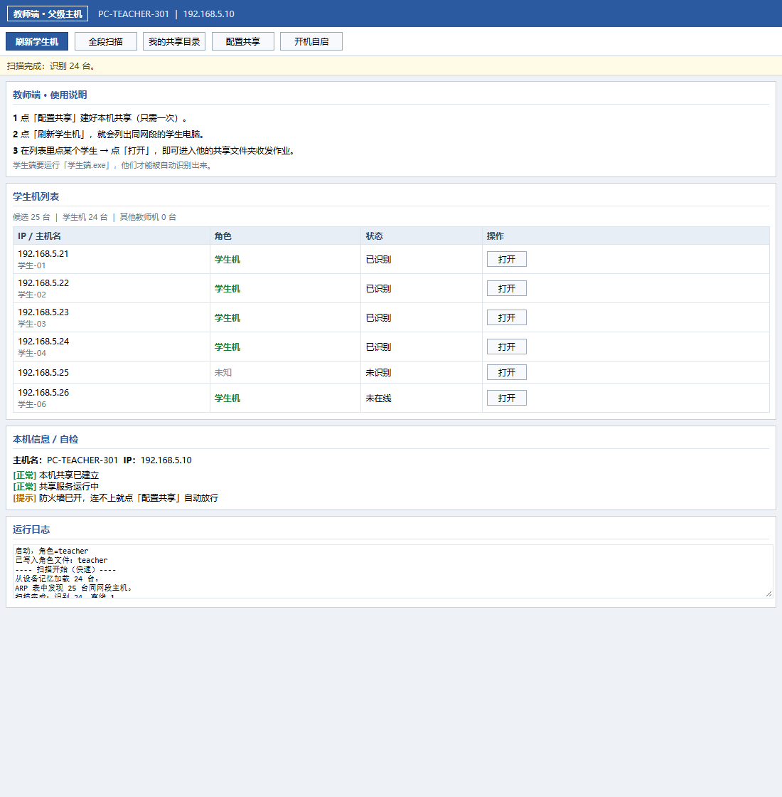
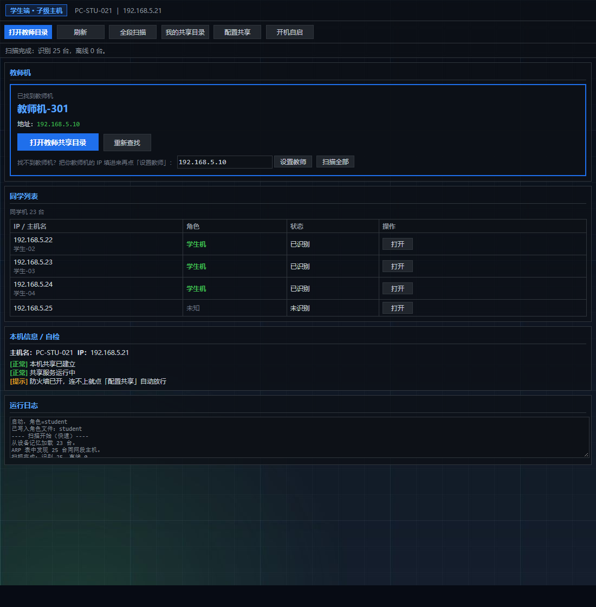

两层原因，第二层才是真正的病根
家庭组在 Windows 7 引入，Windows 10 1803（2018）被微软彻底移除。Win7 和 Win10/11 之间根本没有共同机制。
从 Windows 10 1709 起，AllowInsecureGuestAuth 默认为 0，拒绝所有匿名 SMB 访问。即使绕过家庭组、用 IP 直连，Win10/11 仍报「安全策略阻止未经身份验证的来宾访问」。
只解决家庭组没有用。真正卡住的是 SMB 认证这一层。lanpass 同时处理这两层，才能做到跨版本互通。
为机房老机器设计，不是为旗舰机benchmark
只用系统自带的 mshta / cmd / net / ping / arp。不需要 .NET（任何版本）、VC++、Java、Python、Node、Rust、Go。
家庭组、网络发现、Computer Browser、SSDP、DNS 全部失效也照用。发现靠 ARP 表和主动扫描。
Win7 / Win10 / Win11 双向访问。配置共享时自动写入 4 项注册表修复认证限制。
教师端管理全班、一键打开任意学生目录；学生端一键打开教师目录交作业。一个程序，两种角色。
ARP 表 + 全段 ping 扫描（254 个地址，分批 32 个并行，约 4 秒）。ping 只为填充 ARP 表，不等 ICMP 回应。
扫到的机器存进 devices.ini，下次开机直接读文件，列表秒出，不用重新扫描。
浅色教师端，深色学生端


四层机制，全部不依赖第三方组件
ARP 属于 TCP/IP 二层，与任何 Windows 服务无关。只要曾经通信过，ARP 表里就有对方的 MAC 和 IP。
ARP 为空时，向 1~254 逐个发探测包。关键点是：ping 的目的只是把对方写进本机 ARP 表，不要求对方回应 ICMP。防火墙禁 ping 也不影响。
每台机器在共享目录写 .lanshare.ini，内容是 ROLE / NAME / IP。对方读到就知道是教师还是学生。纯文件方案，不需要服务器或数据库。
配置共享时自动写入，解决 Win10/11 拒绝匿名 SMB 访问的问题。这是跨版本互访的技术前提。
// 配置共享时自动执行
AllowInsecureGuestAuth = 1 允许来宾访问
LimitBlankPasswordUse = 0 允许空密码账户远程访问
RestrictNullSessAccess = 0 允许匿名会话访问共享
net user guest /active:yes 启用 Guest 账户docs/SECURITY.md。完整 27 条见仓库 docs/QRA.txt
就是 AllowInsecureGuestAuth 的问题。两台机器都点一次「配置共享」，然后重启电脑。
点「全段扫描」。还不行就确认：双方 IP 前三位相同、在同一台交换机、都点过「配置共享」。
用记事本打开 setup-share.bat 和 app.hta，把 D:\lan-share 改成实际存在的路径，两处都要改，然后重新点一次「配置共享」。
IExpress 自解压包 + mshta 执行脚本这两个特征容易被行为引擎打标。用「绿色版-免安装」可以降低误报，它不释放文件到临时目录、不写安装注册表。
Windows 7 SP1 / 8 / 8.1 / 10 / 11，32 位和 64 位都支持。Win7 上未做实机测试，代码按 IE8 引擎编写，理论上兼容。